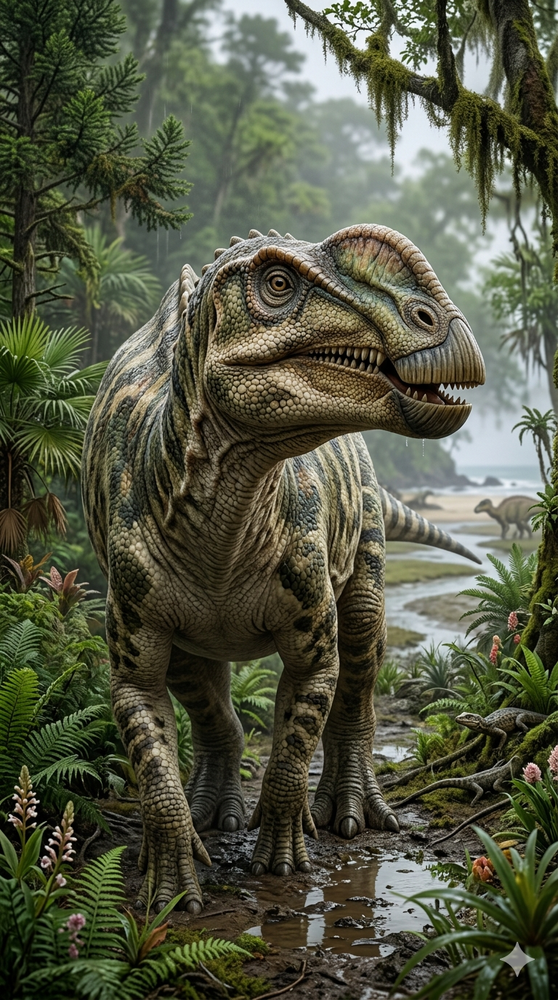
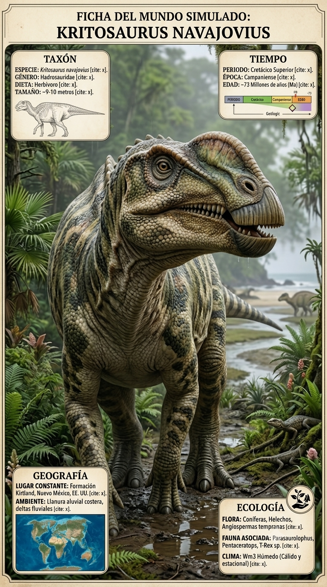
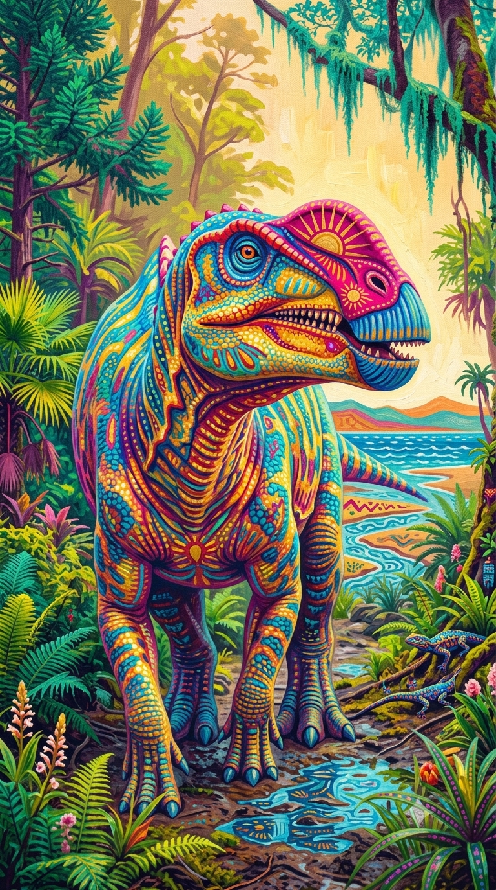
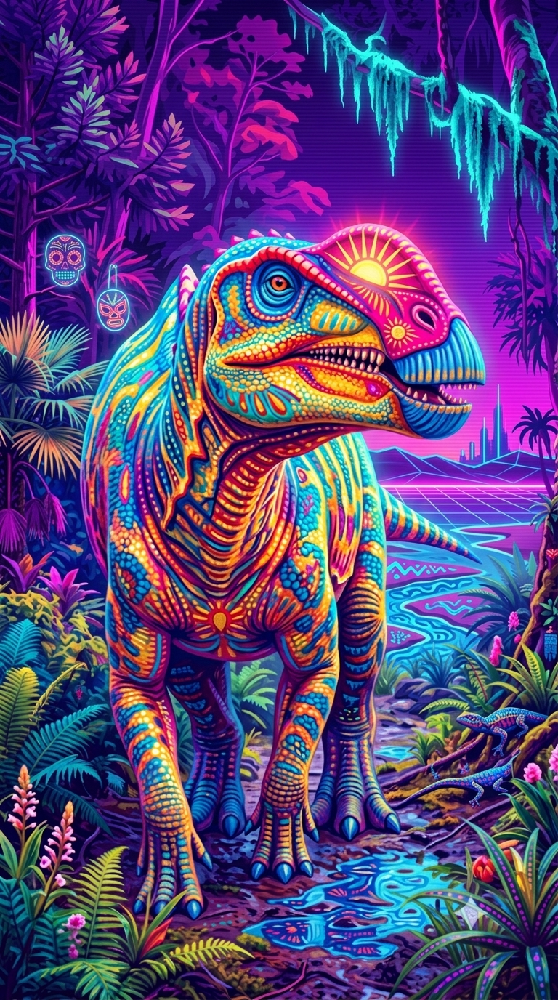

Paleoficha de Kritosaurus




Periodo: Cretácico Superior
Edad: Hace aproximadamente entre 75 y 73 millones de años.
Dieta: Herbívoro.
Distribución: Formación Fruitland, Nuevo México (Norteamérica).
TAXÓN:
Kritosaurus navajovius (Hadrosauridae, Saurolophinae). Dinosaurio herbívoro de gran tamaño, dotado de un potente aparato masticador formado por complejas baterías dentales.
TIEMPO:
Cretácico Superior (Campaniense), hace aproximadamente entre 75 y 73 millones de años.
GEOGRAFÍA:
Formación Fruitland, Nuevo México (Laramidia, Norteamérica). Planicies costeras situadas junto al margen occidental del Mar Interior Occidental.
ECOLOGÍA:
Habitaba extensas llanuras de inundación con bosques de coníferas, angiospermas tempranas y helechos ribereños. Compartía su ecosistema con Pentaceratops, Parasaurolophus, el tiranosauroide Bistahieversor y el gigantesco cocodrilo Deinosuchus. Era un megaherbívoro gregario, especializado en el consumo de grandes cantidades de vegetación gracias a su eficiente dentición.
CLIMA:
Wm12 (Subtropical húmedo). Clima cálido y húmedo con fuerte influencia marina.
ESTADO ECOLÓGICO:
Estable. Constituye uno de los hadrosáuridos más representativos de Laramidia y un componente esencial de las comunidades herbívoras del Campaniense.
Vídeo PalEntropía:
▶ Ver Short en YouTube